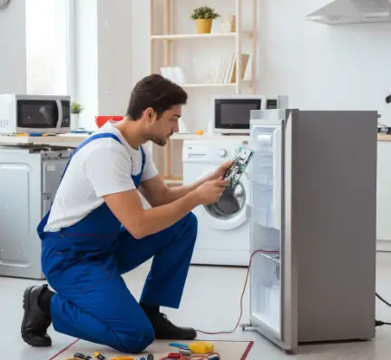

الدليل الشامل للعناية بالأجهزة الموفرة للطاقة
كيف تحافظ على كفاءة أجهزتك، تقلل فرص الأعطال، وتستخدم الطاقة بشكل أفضل من خلال الصيانة والاستخدام الصحيح.
الأجهزة الموفرة للطاقة تساعد على تقليل استهلاك الكهرباء مع الحفاظ على مستوى جيد من الأداء، لكن شراء جهاز عالي الكفاءة وحده لا يكفي. طريقة الاستخدام والتنظيف والفحص الدوري لها دور مهم في الحفاظ على كفاءة الجهاز وتجنب الأعطال المبكرة.
في هذا الدليل من أرشيف التوكيل للصيانة نستعرض أهم النقاط التي تساعدك على العناية بالأجهزة الموفرة للطاقة، بداية من الثلاجات والغسالات وحتى أجهزة التكييف والأجهزة الذكية، مع نصائح عملية للاستخدام اليومي.
أداء جهازك بدأ يتغير؟
لو لاحظت ارتفاعًا غير معتاد في استهلاك الكهرباء أو ضعفًا في أداء أحد الأجهزة، يمكنك التواصل مع التوكيل للصيانة لطلب الفحص المناسب، سواء من خلال زيارة فني إلى المنزل أو الاستفسار عن إحضار الجهاز إلى مقر الشركة.
ما هي الأجهزة الموفرة للطاقة وكيف تعمل؟
الأجهزة الموفرة للطاقة هي أجهزة مصممة لتقديم الأداء المطلوب مع استهلاك أقل للطاقة مقارنة ببعض الأجهزة التقليدية. وتختلف التقنيات المستخدمة من جهاز لآخر؛ فبعض الأجهزة تعتمد على تقنية الإنفرتر التي تساعد على تعديل استهلاك الطاقة حسب الحاجة، بينما تعتمد أجهزة أخرى على عزل أفضل أو أنظمة تحكم أكثر كفاءة.
أهمية صيانة الأجهزة الموفرة للطاقة
الصيانة الدورية لا تحافظ على الجهاز فقط، بل تساعد أيضًا في اكتشاف المشكلات قبل أن تتحول إلى عطل أكبر. تراكم الأتربة، ضعف التهوية، تلف بعض الأسلاك أو المكونات، أو سوء الإعدادات قد يجعل الجهاز يعمل بجهد أكبر من الطبيعي ويؤثر على كفاءته.
ولهذا فإن التنظيف والفحص المنتظمين، إلى جانب الاستخدام الصحيح، يساعدان على الحفاظ على الأداء وتقليل فرص الأعطال المفاجئة.
العناية بالأجهزة الذكية
الأجهزة المنزلية الذكية تعتمد على مستشعرات وأنظمة تحكم وبرامج إلكترونية، ولذلك تحتاج إلى الاهتمام بالجانب البرمجي إلى جانب التنظيف والفحص التقليدي.
- تحديث البرامج عند توفر تحديثات من الشركة المصنعة.
- الحفاظ على نظافة المستشعرات وعدم تغطيتها أو وضع عوائق أمامها.
- التأكد من الاتصال بالشبكة إذا كان الجهاز يعتمد على الإنترنت أو تطبيق للتحكم.
- اتباع دليل الاستخدام الخاص بالموديل لتجنب تغيير إعدادات قد تؤثر على الأداء.
أخطاء شائعة تقلل كفاءة الأجهزة الموفرة للطاقة
هناك ممارسات تبدو بسيطة لكنها قد تؤثر على عمر الجهاز وكفاءته، ومن أهمها:
- تحميل مشترك كهربائي أو مقبس فوق قدرته بتوصيل عدة أجهزة عالية الاستهلاك معًا.
- تجاهل تقلبات الجهد الكهربائي التي قد تؤثر على المكونات الإلكترونية الحساسة.
- إهمال التنظيف وترك الأتربة تتراكم على الفلاتر أو مناطق التهوية والمكثفات.
- تشغيل الجهاز في ظروف غير مناسبة مثل وضع الثلاجة في مكان شديد الحرارة أو منع فتحات التهوية.
تنظيف فلتر التكييف للحفاظ على الكفاءة
فلتر التكييف المتسخ يعيق حركة الهواء، وقد يجعل الجهاز يعمل لفترة أطول للوصول إلى درجة الحرارة المطلوبة. ويمكن تنظيف الفلتر بشكل دوري باتباع تعليمات الجهاز.
- افصل التيار الكهربائي عن الجهاز قبل البدء.
- افتح الوحدة الداخلية وأخرج الفلتر برفق.
- نظف الفلتر بالماء الفاتر ومنظف لطيف عند السماح بذلك في دليل الجهاز.
- اتركه يجف تمامًا قبل إعادته إلى مكانه.
- أعد تركيب الفلتر وتأكد من إغلاق الوحدة بإحكام.
صيانة الثلاجة الموفرة للطاقة
الثلاجة من الأجهزة التي تعمل لفترات طويلة، لذلك الحفاظ على كفاءتها مهم لتقليل المجهود الواقع على الضاغط والحفاظ على التبريد.
تنظيف وفحص منطقة المكثف
تراكم الأتربة حول ملفات المكثف أو مناطق التخلص من الحرارة قد يقلل من كفاءة التبريد. يمكن تنظيف المناطق التي يسمح دليل الجهاز بتنظيفها باستخدام فرشاة ناعمة أو مكنسة مناسبة، مع فصل الكهرباء أولًا.
فحص جوان الباب
تأكد من أن الإطار المطاطي للباب نظيف وسليم ويغلق بإحكام. تسرب الهواء البارد يجعل الجهاز يعمل لفترات أطول للحفاظ على درجة الحرارة المطلوبة.
ضبط درجة الحرارة
استخدم إعدادات الحرارة الموصى بها في دليل الثلاجة. وبشكل عام، تشير المادة الأصلية إلى نطاق يقارب 2 إلى 4 درجات مئوية للثلاجة وحوالي -18 درجة مئوية للفريزر، مع اختلاف الإعداد المناسب حسب الموديل وظروف الاستخدام.
كيف يمكن للصيانة أن تؤثر على استهلاك الكهرباء؟
الجهاز الذي يعمل في ظروف جيدة ولا يعاني من انسداد أو ضعف تهوية أو مشكلة في أحد مكوناته يستطيع أداء وظيفته بكفاءة أفضل. لذلك قد ينعكس تنظيف الفلاتر ومناطق التهوية وفحص المكونات على استقرار الاستهلاك.
لكن لا يمكن تحديد نسبة توفير ثابتة لجميع الأجهزة؛ مقدار التوفير يعتمد على نوع الجهاز وحالته وطريقة استخدامه والبيئة المحيطة به.
خلي جهازك يشتغل بكفاءة
إذا لاحظت تغيرًا في أداء الجهاز أو استهلاك الكهرباء، لا تؤجل الفحص حتى يتحول الأمر إلى عطل أكبر. تواصل مع التوكيل للصيانة للاستفسار وطلب الخدمة المناسبة.
أسئلة شائعة
كيف أحمي الأجهزة من تقلبات الكهرباء؟
يمكن استخدام وسائل حماية مناسبة مثل منظمات الجهد للأجهزة التي تحتاج إليها، مع اختيارها وفق مواصفات الجهاز وتعليمات الشركة المصنعة. وفي حالة الأجهزة الإلكترونية الحساسة، استشر مختصًا لتحديد وسيلة الحماية المناسبة.
هل الصيانة تطيل عمر الجهاز؟
العناية المنتظمة والاستخدام الصحيح يساعدان على الحفاظ على أداء الجهاز وتقليل فرص بعض الأعطال، لكن العمر الفعلي يختلف حسب نوع الجهاز وجودة التصنيع وظروف التشغيل والصيانة.
هل الأجهزة الموفرة للطاقة تستهلك كهرباء أقل دائمًا؟
تصميم الجهاز قد يجعله أكثر كفاءة، لكن الاستهلاك الفعلي يعتمد أيضًا على ساعات التشغيل، درجة الحرارة، الحمل، الإعدادات، وحالة الجهاز والصيانة.
متى أطلب فني صيانة؟
إذا استمر ضعف الأداء بعد الفحوصات البسيطة، أو ظهرت أصوات غير طبيعية، أو مشاكل كهربائية، أو تسريب، أو ارتفاع ملحوظ وغير معتاد في الاستهلاك، فمن الأفضل طلب فحص متخصص.
هل تواجه مشكلة أو عطلاً في جهازك؟
تواصل مع فريق "التوكيل للصيانة" الآن للحصول على استشارة فنية وفحص منزلي فوري بأعلى معايير الدقة والأمان.